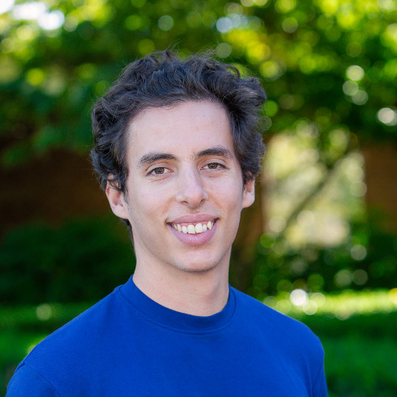

About me
I am postdoctoral member of the Institute for Advanced Study, in the school of mathematics. I got my PhD under the supervision of Professor Alessio Figalli at ETH Zurich.
I am interested in the field of analysis in a rather broad sense: from differential geometry, to probability, going through partial differential equations. I have worked on the random matching problem (a problem at the interface between optimal transport and probability), on the stability of functional/geometric inequalities, on the properties of the free-boundary in the obstacle problem, and on the construction of the fundamental solution for an elliptic operator with analytic coefficients. See my publications for details on what I have worked on.
I am currently investigating the stability of the fractional Caffarelli-Kohn-Nirenberg inequality, the regularity of minimal surfaces at the boundary, and the determination of a set from the sums over all of its subsets.
As a hobby, I enjoy organizing and taking part in programming competitions and I have managed to take part in the finals of the most important contests all over the world (IOI, Google Code Jam, ICPC).
I like to go running and I am a proud finisher of two half marathons.
Curriculum vitae
Here you can find my curriculum vitae.
Contact information
Email: fglaudo@ias.edu
Address: Office 102, Building A, Institute for Advanced Study, Princeton